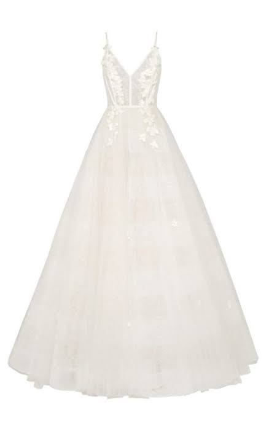
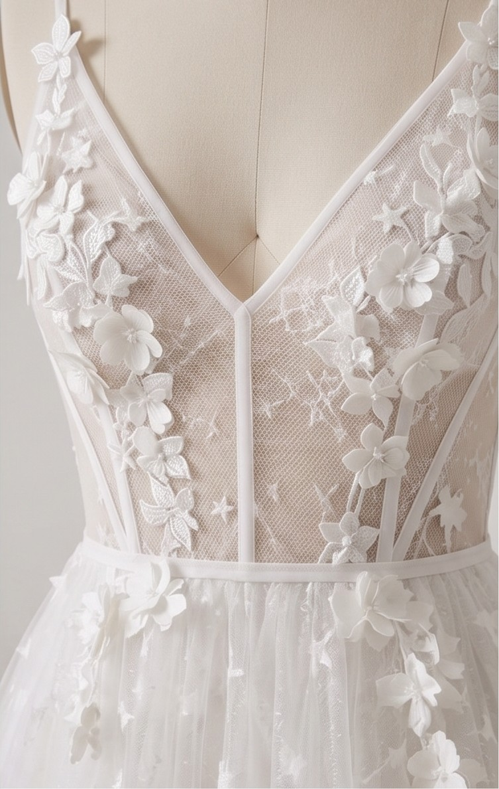
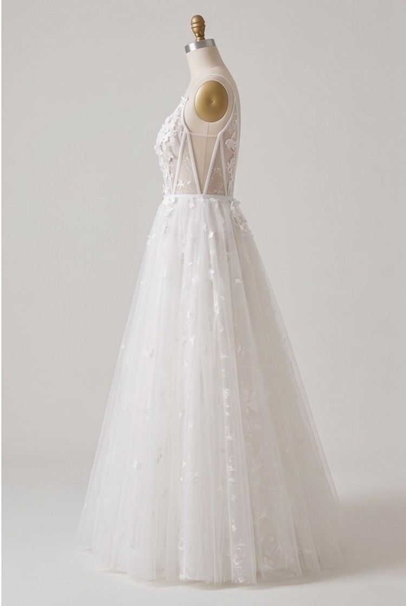
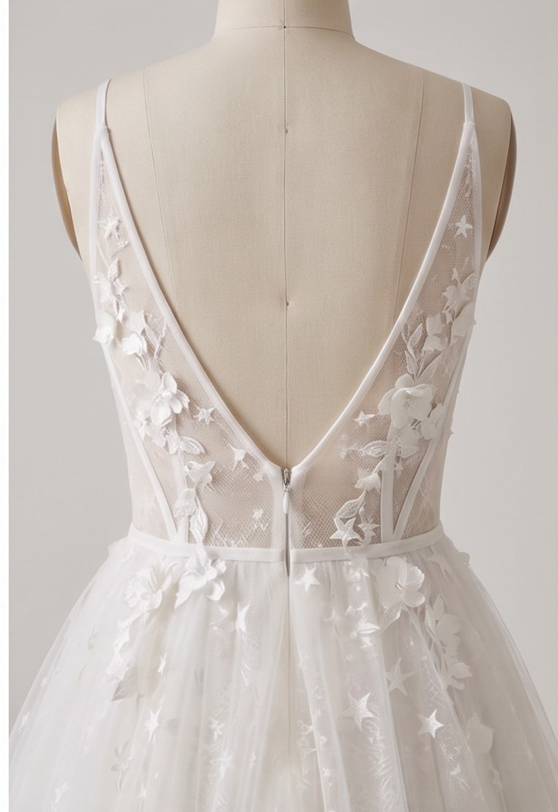

S/ 1,350.00
Vestido de ensueño con una silueta de corte A, caracterizado por un talle ajustado que se abre en una falda voluminosa y etérea, ofreciendo una presencia romántica y majestuosa.
El corpiño presenta un profundo escote en V con copas estructuradas y tirantes finos, adornado con delicados apliques florales tridimensionales que descienden ligeramente hacia la cintura.
Confeccionado en múltiples capas de tul suave y ligero, la falda tiene un efecto de transparencia sutil y está salpicada de motas brillantes o aplicaciones de encaje dispersas, añadiendo un toque de luz y magia.
La falda de corte A fluye con gracia, creando un movimiento suave y ligero al caminar, ideal para ceremonias tanto al aire libre como en interiores.
✅ Compra realizada exitosamente